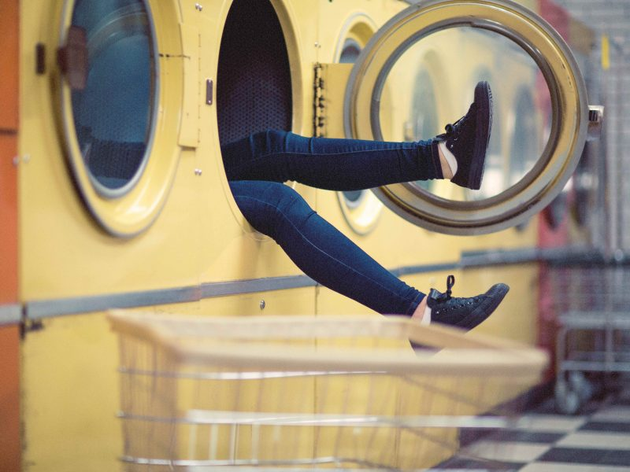

March 25, 2019
Laundry Upgrade

1 Billion. That’s how many loads of laundry Americans do every week according to government data.
250,000. That’s how many plastic micro-fibers are released every time a fleece jacket is washed.
1 Billion X 250,000 = a lot of plastic in our waterways.
How do we stop this micro-pollution from contaminating our fisheries and water resources?
Here are 3 super easy steps:
– Wash our clothes less often. In addition to minimizing micro-plastic pollution, it will reduce electricity and water use, give longer life to our garments and save us time and money!
– Buy clothing made from natural fibers like cotton, wool or hemp.
– Use a filter bag when we wash synthetic clothes. The Guppyfriend is a patented washing bag that collects even the tiniest microfibers.
Photo by Nik MacMillan on Unsplash